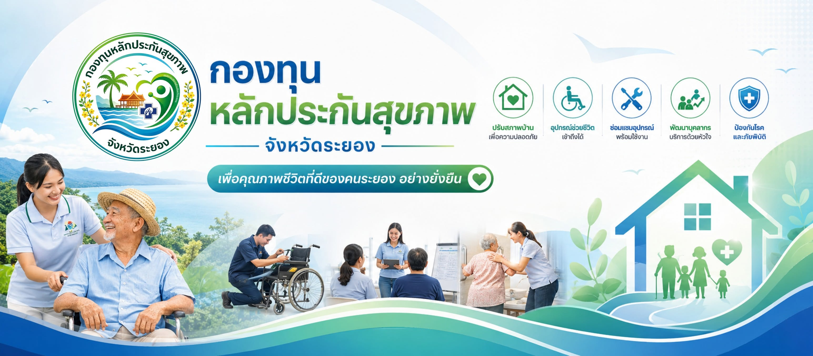

ไม่พบโครงการที่ตรงกับการค้นหา
4 โครงการหลัก · คลิกเพื่อดูรายละเอียด
ไม่พบอุปกรณ์ที่ตรงกัน
| หน่วยบริการ | อำเภอ | ปี 64 | ปี 65 | ปี 66 | ปี 67 | ปี 68 | รวม | สถานะ |
|---|
| # | ประเภท | ชื่อ | ตำบล | อำเภอ | โทร | แผนที่ |
|---|
| # | ปี | อำเภอ | หน่วยบริการ | ชื่อโครงการ | งบประมาณ | สถานะ |
|---|
| อำเภอ | โครงการ | งบรวม (บาท) | งบเฉลี่ย | หน่วยบริการ | เสร็จสิ้น | กำลังดำเนินการ |
|---|
📅 งบประมาณตามปีงบประมาณ
งบประมาณรวม (แท่ง, ล้านบาท) และจำนวนโครงการ (เส้น) จำแนกตามปี
📦 สถานะการใช้งานอุปกรณ์
จัดซื้อ / เบิกจ่าย / คงเหลือสะสมรวมทุกปี — กรองตามอำเภอ / หน่วยงาน / กลุ่มอุปกรณ์ (ไม่ขึ้นกับปีที่เลือก)
📍 จำนวนรายการอุปกรณ์ตามอำเภอ
จำนวนรายการอุปกรณ์ต่ออำเภอ (นับแต่ละรายการไม่ซ้ำตามปี) ตามข้อมูลที่เลือก
🏥 หน่วยบริการที่มีรายการอุปกรณ์มากที่สุด
Top 8 หน่วยบริการ / ศูนย์ซ่อม ตามจำนวนรายการอุปกรณ์ (ไม่ซ้ำตามปี) ตามข้อมูลที่เลือก
🔧 กลุ่มอุปกรณ์ที่พบมากที่สุด
Top 10 กลุ่มอุปกรณ์ ตามจำนวนรายการอุปกรณ์ในข้อมูลที่เลือก
| อำเภอ | หน่วยงาน | กลุ่ม | อุปกรณ์ | ปี | จัดซื้อ | เบิก | คงเหลือ | ประวัติ |
|---|
| ปี | หน่วยงาน | งบประมาณ (บาท) | ส่งโครงการ | อนุมัติ | รับเช็ค | ส่งรายงาน | หมายเหตุ |
|---|
ไม่พบข้อมูล
📍 สรุปรายอำเภอ
| อำเภอ | หน่วยบริการ | จำนวนกลุ่ม | รายการไม่ซ้ำ | จัดซื้อสะสม (ชิ้น) | เบิกจ่ายสะสม (ชิ้น) | คงเหลือล่าสุด (ชิ้น) |
|---|---|---|---|---|---|---|
| — | ||||||
🔧 สรุปรายกลุ่มอุปกรณ์
| กลุ่มอุปกรณ์ | จำนวนอำเภอ | จำนวนหน่วยบริการ | รายการไม่ซ้ำ | จัดซื้อสะสม (ชิ้น) | เบิกจ่ายสะสม (ชิ้น) | คงเหลือล่าสุด (ชิ้น) |
|---|---|---|---|---|---|---|
| — | ||||||
รายชื่อศูนย์ซ่อม/ดัดแปลงอุปกรณ์ที่เปิดให้บริการ และกลุ่มอุปกรณ์ที่แต่ละศูนย์รับซ่อม